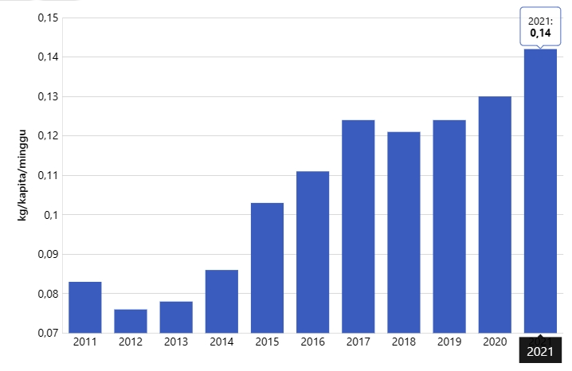

Ayam pedaging
Ayam yang dipelihara untuk daging disebut ayam broiler. Ayam secara alami akan hidup selama enam tahun atau lebih, tetapi jenis ayam broiler biasanya memerlukan waktu kurang dari enam minggu untuk mencapai ukuran potong. Sebuah ayam broiler jelajah bebas atau organik biasanya akan dipotong pada usia sekitar 14 minggu.
Fakta Menarik
Dilansir dari Katadata: Menurut laporan Badan Pusat Statistik (BPS), pada tahun 2021 rata-rata konsumsi daging ayam di Indonesia mencapai 0,14 kilogram (kg) per kapita per minggu.